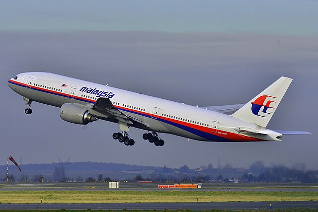

Coast Guard
What is the Coast Guard
The Coast Guard is the main branch for search and resuce missions in the Pacific ocean, Artic ocean, and the Atlantic ocean as well as protecting the water from modern day pirates. Pirates have become more popular in the 21st century in the pacific ocean specifically since thats the main routes for cargo ships. Pirates will take advanntage of that attack the ships with multiple boats with armed people. The Coast Guard is also more specific area is protecting the beaches and shore lines od the United States and are frequently seen along the coast.

Biggest Achievement
The biggest achievement made by the Coast Guard is the foundation of SAR (Search And Rescue) missions as they have saved thousands of people over the years in boat and plane accidents. One of their biggest case is the mysterious dissapereance of fligth MH370 as it dissapeared without a trace and to this day, no one knows where it is or what actually happened. The USGC (United States Coast Guard) joined dozens of countries in the search for the missing plane and its passengers but the closest we've gotten is by finding a piece from the window and it proved that the plane had unfortunately crashed into the ocean.
Fligth MH370
How to Join The ?
To enlist in the U.S. Coast Guard, you will have to select a career:
- Choose Career Path - You will have to make a choice to select your career path between 28 different career as a coast guard. You can also choose to volunteer as a civilian.
- Contact A Local Recruiter - You will then need to contact a recruiter so you can begin your training.
- Enter Academy And Enlist To The USCG - You then will enter the academy and learn all the basics before you are officially enlisted in the USCG.
For more information you can visit .com